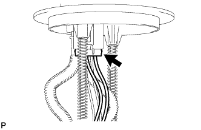
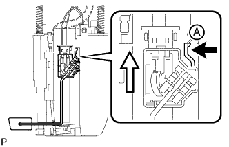

FUEL SENDER GAUGE ASSEMBLY > REMOVAL |
| 1. REMOVE FUEL SUCTION WITH PUMP AND GAUGE TUBE ASSEMBLY |
Remove the fuel suction with pump and gauge tube assembly (Click here).
| 2. REMOVE FUEL SENDER GAUGE ASSEMBLY |
|  |
Disconnect the fuel sender gauge connector.
|  |
Press down on the fuel sender gauge claw labeled A. Then slide the fuel sender gauge upward to remove it.
 | Press Down |
 | Slide |